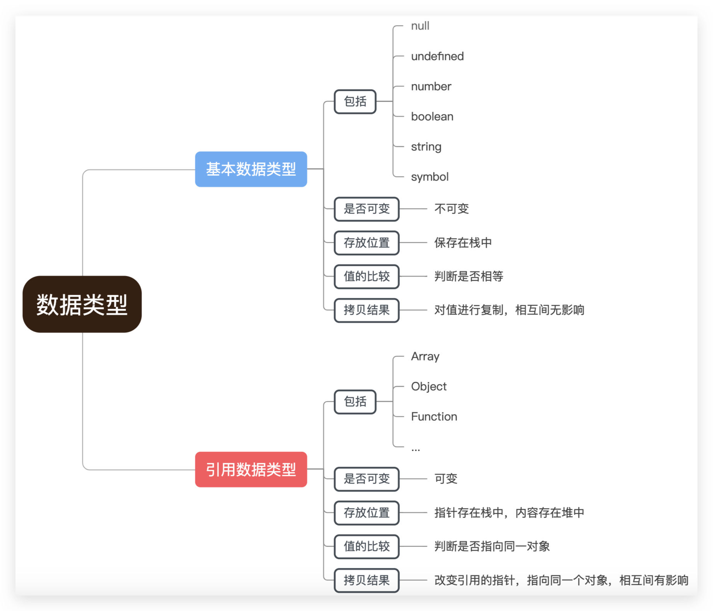

var name = 'java';
name.toUpperCase(); // 输出 'JAVA'
console.log(name); // 输出 'java'
原始数据类型直接存储在栈(stack)中的简单数据段，占据空间小、大小固定，属于被频繁使用数据，所以放入栈中存储。
栈（stack）为自动分配的内存空间，它由系统自动释放；使用一级缓存，被调用时> 通常处于存储空间中，调用后被立即释放
堆（heap）则是动态分配的内存，大小不定也不会自动释放；使用二级缓存，生命> 周期与虚拟机的GC算法有关
var a = 1;
var b = true;
console.log(a == b); // true
console.log(a === b); // false
== : 只进行值的比较，会进行数据类型的转换。
=== : 不仅进行值得比较，还要进行数据类型的比较。
var a={age:20};
a.age=21;
console.log(a.age) //21
引用数据类型存储在堆(heap)中的对象，占据空间大、大小不固定，如果存储在栈中，将会影响程序运行的性能；
引用数据类型在栈中存储了指针，该指针指向堆中该实体的起始地址。当解释器寻找引用值时，会首先检索其在栈中的地址，取得地址后从堆中获得实体。
当从一个变量向另一个变量赋引用类型的值时，同样也会将存储在变量中的对象的值复制一份放到为新变量分配的空间中。
var a={age:20};
var b=a;
b.age=21;
console.log(a.age==b.age) //true引用类型存储在堆中的对象，与此同时，在栈中存储了指针，而这个指针指向正是堆中实体的起始位置。
变量 a 初始化时，a 指针指向对象{age:20}的地址，a 赋值给 b 后,b 又指向该对象{age:20}的地址，这两个变量指向了同一个对象。
因此，改变其中任何一个变量，都会相互影响。
此时，如果取消某一个变量对于原对象的引用，不会影响到另一个变量。
var a={age:20};
var b=a;
a = 1;
b // {age:20}上面代码中，a 和 b 指向同一个对象，然后 a 的值变为 1，这时不会对 b 产生影响，b 还是指向原来的那个对象。
typeof 返回一个表示数据类型的字符串，返回结果包括：
等 7 种数据类型，但不能判断 null、array 等
typeof Symbol(); // symbol 有效
typeof ''; // string 有效
typeof 1; // number 有效
typeof true; // boolean 有效
typeof undefined; // undefined 有效
typeof new Function(); // function 有效
typeof null; // object 无效
typeof [] ; // object 无效
typeof new Date(); // object 无效
typeof new RegExp(); // object 无效对于基本类型来说，typeof 除了 null 都可以显示正确的类型
对于引用类型来说，typeof 除了 function 都会显示 object，因此 typeof 并不能准确判断变量是什么类型，这时就需要用到 instanceof 来判断对象
instanceof 的原理是通过原型链来判断 A 是否为 B 的实例，表达式为：A instanceof B，如果 A 是 B 的实例，则返回 true,否则返回 false；
instanceof 运算符用来测试一个对象在其原型链中是否存在一个构造函数的 prototype 属性。
[] instanceof Array; //true
{} instanceof Object; //true
new Date() instanceof Date; //true
new RegExp() instanceof RegExp;//true关于数组的类型判断，还可以用 ES6 新增的 Array.isArray()
Array.isArray([]); // true
对于基本类型来说，字面量方式创建出来的结果和实例方式创建的是有一定的区别的
console.log(1 instanceof Number) //false
console.log(new Number(1) instanceof Number) //true从严格意义上来讲，只有实例创建出来的结果才是标准的对象数据类型值，也是标准的 Number 这个类的一个实例；
对于字面量方式创建出来的结果是基本的数据类型值，不是严谨的实例，但是由于 JS 的松散特点，导致了可以使用 Number.prototype 上提供的方法。
只要在当前实例的原型链上，我们用其检测出来的结果都是 true。在类的原型继承中，我们最后检测出来的结果未必准确
var arr = [1, 2, 3];
console.log(arr instanceof Array) // true
console.log(arr instanceof Object); // true
function fn(){}
console.log(fn instanceof Function) // true
console.log(fn instanceof Object) // true不能检测 null 和 undefined
对于特殊的数据类型 null 和 undefined，他们的所属类是 Null 和 Undefined，但是浏览器把这两个类保护起来了，不允许我们在外面访问使用。
只能用于判断 null 和 undefined，因为这两种类型的值都是唯一的
var a = null;
typeof a; // "object"
a === null; // true
undefined 还可以用 typeof 来判断
var b = undefined;
typeof b === "undefined"; // true
b === undefined; // trueconstructor 作用和 instanceof 非常相似。
但 constructor 检测 Object 与 instanceof 不一样，还可以处理基本数据类型的检测。
var aa=[1,2];
console.log(aa.constructor===Array); //true
console.log(aa.constructor===RegExp); //false
console.log((1).constructor===Number); //true
var reg=/^$/;
console.log(reg.constructor===RegExp); //true
console.log(reg.constructor===Object); //false
null 和 undefined 是无效的对象，因此是不会有 constructor 存在的，这两种类型的数据需要通过其他方式来判断。
函数的 constructor 是不稳定的，这个主要体现在把类的原型进行重写，在重写的过程中很有可能出现把之前的 constructor 给覆盖了，这样检测出来的结果就是不准确的
function Fn()>{}
Fn.prototype = new Array()
var f = new Fn
console.log(f.constructor) //Array
instanceof 只要在当前实例的原型链上，检测结果都是 true，无法判断是否为直接类的实例，而 constructor 可以
Object.prototype.toString.call() 最准确最常用的方式。
首先获取 Object 原型上的 toString 方法，让方法执行，让 toString 方法中的 this 指向第一个参数的值。
关于 toString 重要补充说明：
本意是转换为字符串，但是某些 toString 方法不仅仅是转换为字符串
对于 Number、String，Boolean，Array，RegExp、Date、Function 原型上的 toString 方法都是把当前的数据类型转换为字符串的类型（它们的作用仅仅是用来转换为字符串的）
Object 上的 toString 并不是用来转换为字符串的。
Object 上的 toString 它的作用是返回当前方法执行的主体（方法中的 this）所属类的详细信息即"[object Object]",
其中第一个 object 代表当前实例是对象数据类型的(这个是固定死的)，第二个 Object 代表的是 this 所属的类是 Object。
Object.prototype.toString.call('') ; // [object String]
Object.prototype.toString.call(1) ; // [object Number]
Object.prototype.toString.call(true) ; // [object Boolean]
Object.prototype.toString.call(undefined) ; // [object Undefined]
Object.prototype.toString.call(null) ; // [object Null]
Object.prototype.toString.call(new Function()) ; // [object Function]
Object.prototype.toString.call(new Date()) ; // [object Date]
Object.prototype.toString.call([]) ; // [object Array]
Object.prototype.toString.call(new RegExp()) ; // [object RegExp]
Object.prototype.toString.call(new Error()) ; // [object Error]
Object.prototype.toString.call(document) ; // [object HTMLDocument]
Object.prototype.toString.call(window) ; // [object global] window是全局对象global的引用